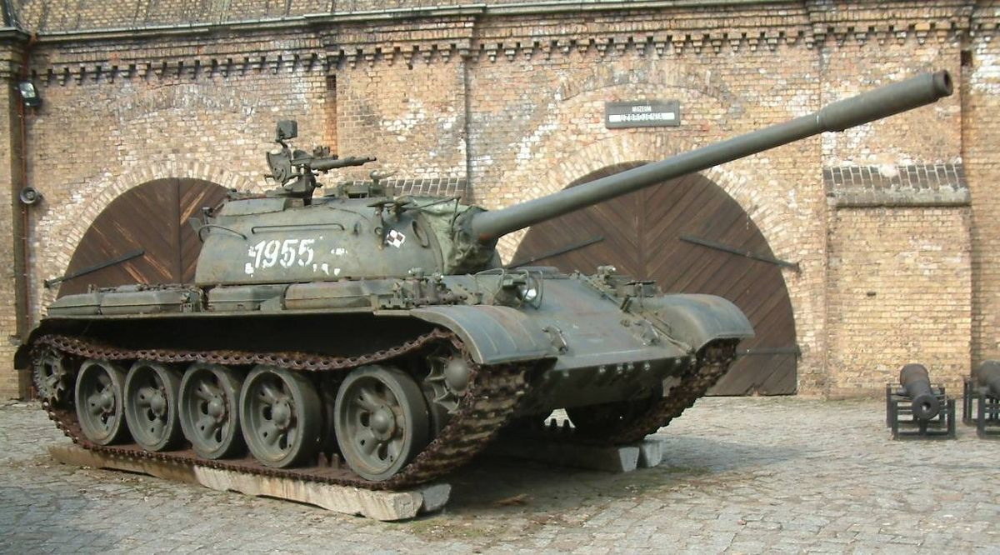

SSSR u Hladnom ratu
Tijekom Hladnog rata, Sovjetski Savez razvio je širok raspon oklopnih vozila koja su postala okosnica sovjetskih kopnenih snaga i izvozila se širom svijeta. Sovjetska doktrina oslanjala se na masovnu proizvodnju, jednostavnost održavanja i sposobnost djelovanja u različitim borbenim uvjetima. Središnje mjesto zauzimali su glavni borbeni tenkovi, poput T-54/55, koji su postali najproizvođeniji tenk u povijesti, te T-62 i T-72, koji su donosili poboljšanja u vatrenoj moći i oklopnoj zaštiti. Kasniji modeli, poput T-80, uveli su tehnologiju plinskih turbina, naglašavajući mobilnost i snagu.
Tenkovi su prošlost...
T-55 - T-54 i T-55 ime je za sovjetski tenk koji je nastao kao zamjena za vrlo uspješni tenk T-34 iz Drugog svjetskog rata.[1] Serija tenkova T-54/55 je najmasovnije proizveden model tenka u svijetu i tenk koji je imao najrasprostranjeniju uporabu do sada.[2] Po svom izgledu, T-54 i T-55 u mnogome su slični i tokom vremena mnogi modeli T-54 unaprijeđeni su u T-55. Mnoge zemlje napravile su i svoje preinake T-55, tako da danas postoji mnogo tvrtki koje izvode unaprjeđenja.
